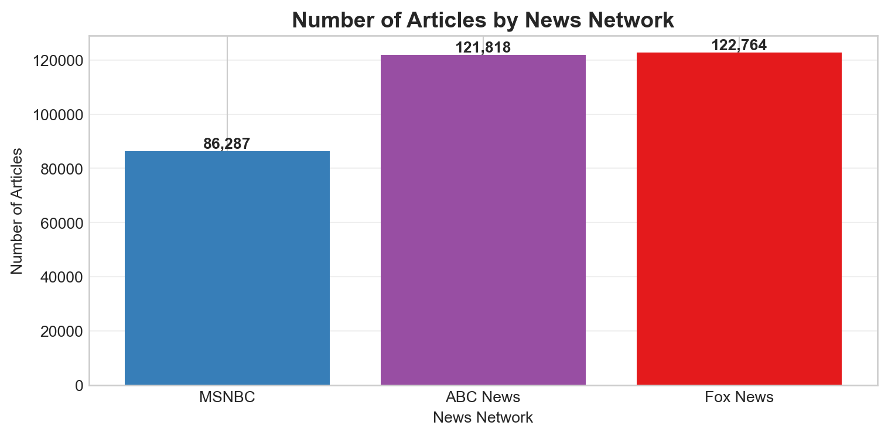
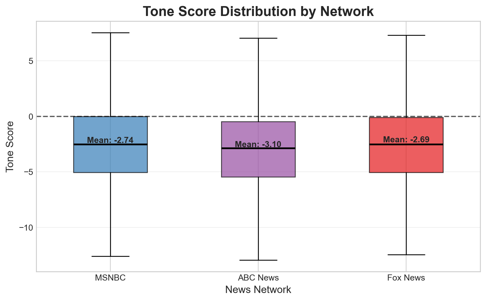
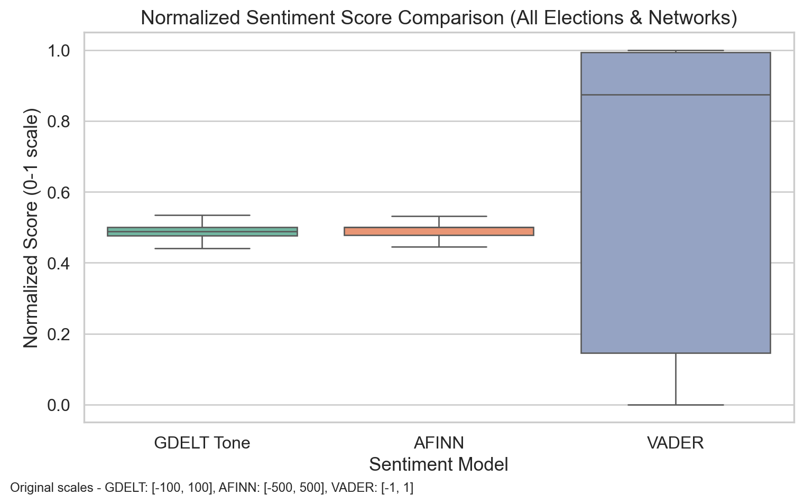
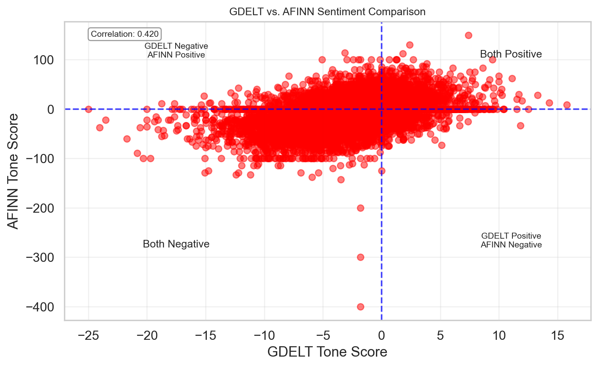

In this analysis, Fox News is generally regarded as a right-leaning outlet, MSNBC as left-leaning, and ABC News as a centrist source. These distinctions help contextualize differences in tone over time, as each network’s political orientation may influence how stories are framed and presented to their audiences.
Overview
This section examines long-term sentiment trends across three major U.S. news networks—Fox News, MSNBC, and ABC News—using tone scores derived from the Global Database of Events, Language, and Tone (GDELT) from 2015 through 2025. These scores quantify the overall tone of news articles on a continuous scale, offering insight into the emotional framing of events and issues over time.
Rather than centering on specific political events, this analysis takes a broad temporal view to uncover overarching trends in news tone. We investigate whether certain networks consistently portray the news with a more positive or negative tone, and how those patterns may shift across months and years.
Understanding GDELT Tone Scores
Before diving into the analysis, it’s essential to understand how GDELT tone scores are computed and what they represent. These scores provide a quantitative measure of emotional tone in global news coverage, enabling systematic comparisons across sources and time periods.
Tone Score: This metric typically ranges from -10 (extremely negative) to +10 (extremely positive), with 0 indicating a neutral tone. It reflects the overall sentiment conveyed in a news article or segment.
Calculation Method: GDELT applies natural language processing (NLP) techniques to extract sentiment by analyzing the frequency and intensity of positive and negative language within each document.
Composite Measure: The tone score is derived as the difference between positive and negative sentiment components, providing a net emotional tone. In later sections, we’ll explore these components individually for a more detailed breakdown.
Higher tone scores indicate a stronger presence of positive language, while lower scores reflect more negative framing. These values allow us to track and visualize long-term sentiment trends, evaluate tone consistency or volatility, and compare differences in emotional framing across news networks with varying political orientations.
Code
import pandas as pdimport globimport matplotlib.pyplot as pltimport numpy as npimport seaborn as snsfrom collections import Counterfrom scipy.stats import ttest_indimport matplotlib.dates as mdatesfrom matplotlib.ticker import MaxNLocator# Set visualization styleplt.style.use('seaborn-v0_8-whitegrid')plt.rcParams['font.family'] ='sans-serif'plt.rcParams['font.sans-serif'] = ['Arial', 'DejaVu Sans', 'Liberation Sans']# Define network colorsNETWORK_COLORS = {'Fox News': '#E41A1C', # Red for Fox'MSNBC': '#377EB8', # Blue for MSNBC'ABC News': '#984EA3'# Purple for ABC}# Import data filescsv_files = ( glob.glob("../data/fox/fox*.csv") + glob.glob("../data/abc/abc*.csv") + glob.glob("../data/msnbc/msnbc*.csv"))# Read CSVs with safe fallback and warn if fallback neededdfs = []forfilein csv_files:try: dfs.append(pd.read_csv(file))exceptUnicodeDecodeError:print(f"⚠️ Warning: Unicode error in '{file}', reading with latin1 fallback.") dfs.append(pd.read_csv(file, encoding='latin1'))df = pd.concat(dfs, ignore_index=True)# Select relevant columnscolumns_of_interest = ["parsed_date", "url", "headline_from_url","V2Themes", "V2Locations", "V2Persons","V2Organizations", "V2Tone"]df = df[columns_of_interest]# Convert date and extract network informationdf["parsed_date"] = pd.to_datetime(df["parsed_date"], errors="coerce").dt.tz_localize(None)# Extract network source from URLsdef extract_network(url):try: url = url.lower()if'fox'in url:return'Fox News'elif'abc'in url:return'ABC News'elif'msnbc'in url:return'MSNBC'else:return'Unknown'exceptAttributeError:return'Unknown'# Add network columndf['network'] = df['url'].apply(extract_network)# Extract tone componentstone_split = df["V2Tone"].str.split(",", expand=True)df["tone"] = pd.to_numeric(tone_split[0], errors="coerce")df["positive_score"] = pd.to_numeric(tone_split[1], errors="coerce")df["negative_score"] = pd.to_numeric(tone_split[2], errors="coerce")# Create month and year columns for aggregationdf['month'] = df['parsed_date'].dt.to_period('M')df['year'] = df['parsed_date'].dt.yeardf['month_year'] = df['parsed_date'].dt.strftime('%Y-%m')
⚠️ Warning: Unicode error in '../data/fox/fox2020.csv', reading with latin1 fallback.
Dataset Overview
Note on Sample Sizes: The data shows a smaller sample for MSNBC compared to Fox News and ABC News. These differences reflect availability via GDELT’s API. This discrepancy should be considered when interpreting results, as it may impact the representativeness of trends for MSNBC.
Code
# Reorder the article countsordered_networks = ['MSNBC', 'ABC News', 'Fox News']article_counts = df['network'].value_counts().reindex(ordered_networks)# Plotplt.figure(figsize=(8, 4))bars = plt.bar(article_counts.index, article_counts.values, color=[NETWORK_COLORS[network] for network in article_counts.index])plt.title('Number of Articles by News Network', fontsize=14, fontweight='bold')plt.xlabel('News Network')plt.ylabel('Number of Articles')plt.xticks(rotation=0)plt.grid(axis='y', alpha=0.3)# Add count labels on top of the barsfor bar in bars: height = bar.get_height() plt.text(bar.get_x() + bar.get_width()/2., height +0.1,f'{int(height):,}', ha='center', va='bottom', fontweight='bold')plt.tight_layout()plt.show()

Tone Distribution Analysis
The dashed horizontal line at 0 represents a neutral tone, serving as a visual reference point to highlight how all three networks tend to lean toward negative sentiment in their reporting. This trend may reflect the nature of media content itself, where negative events often receive more attention and coverage due to their perceived newsworthiness.
All three news networks skew slightly negative in their average tone scores, consistent with prior findings that news coverage tends to focus more on conflict, controversy, and crisis. Fox News has an average tone score of –2.69, MSNBC averages –2.74, and ABC News is the most negative on average at –3.10.
While the overall shapes of the tone distributions are broadly similar, a few important distinctions emerge. ABC News, despite being considered a centrist outlet, exhibits a slightly more negative average tone and a wider distribution, indicating greater variability in emotional framing across its stories. This suggests that ABC may present a broader range of sentiment—from highly negative to moderately positive—compared to the other networks, which tend to cluster more tightly around their respective means.

Figure 1: Tone score distribution across news networks
Outlier Analysis of Tone Scores by Network
The bar chart above visualizes the number of tone score outliers—both negative and positive—for each news network, based on the 1.5×IQR rule.
ABC News has the highest number of outliers overall, with 1,733 negative and 643 positive outliers. This aligns with the earlier observation of ABC’s wider tone distribution, suggesting a greater range in emotional framing.
Fox News reports 1,142 negative and 449 positive outliers, placing it in the middle across both categories.
MSNBC, notably, shows 1,393 negative and 548 positive outliers—despite having fewer total articles in the dataset compared to ABC and Fox. This indicates that MSNBC’s tone scores, while stemming from a smaller sample, exhibit a relatively high rate of extreme sentiment (especially on the negative end).
This pattern reinforces earlier findings that MSNBC’s tone distribution is highly skewed and variable, and that ABC News, though centrist in political alignment, features the most extreme tone scores overall. Outliers play a key role in revealing how each network diverges from neutral framing, offering insight into the intensity of sentiment conveyed over time.
The analysis spans a full decade, capturing evolving sentiment during a wide range of historical events—including presidential election cycles, natural disasters, social movements, and public health crises. Rather than focusing solely on isolated events, this section prioritizes broad temporal trends to uncover patterns in how sentiment varies within and across networks.
Animated monthly average tone trends by news network (2015-2025)
The background shading marks changes in presidential administrations:
Blue indicates Democratic leadership (Obama, Biden)
Red represents Republican leadership (Trump’s terms)
Key insights include:
Fox News maintains a relatively less negative tone, with a slight increase in sentiment during Trump’s presidencies.
MSNBC exhibits sharper dips and greater volatility, particularly negative during both Trump terms, reflecting its more critical coverage.
ABC News stays consistently negative but comparatively stable, suggesting a more neutral editorial stance.
Statistical Analysis
To test whether these tone differences are statistically meaningful, we conducted independent sample t-tests between each network pair.
Fox News vs ABC News: A large t-statistic (25.91) and a p-value < 0.0001 indicate a highly significant difference in tone, with ABC News being significantly more negative.
Fox News vs MSNBC: A smaller but still significant difference was found (p = 0.0031), suggesting Fox is consistently less negative than MSNBC.
ABC News vs MSNBC: The negative t-statistic (-19.80) confirms ABC News is significantly more negative than MSNBC as well.
All comparisons yielded statistically significant results (p < 0.01), reinforcing that tone differences between these networks are not due to random chance but reflect meaningful editorial or coverage differences.
Statistical Significance Testing (t-test for tone differences):
Table 1: Statistical significance of tone differences between networks
Comparison
t-statistic
p-value
Significant
0
Fox News vs ABC News
25.9065
0.0000
Yes
1
Fox News vs MSNBC
2.9581
0.0031
Yes
2
ABC News vs MSNBC
-19.8019
0.0000
Yes
Network Tone Comparison
Here, see that GDELT and AFINN produce relatively tight and centered score distributions when normalized to a 0–1 scale. In contrast, VADER shows a much wider range, suggesting it’s more sensitive to subtle tonal shifts.
Code
import pandas as pdimport globimport matplotlib.pyplot as pltimport numpy as npimport seaborn as snsfrom collections import Counterfrom scipy.stats import ttest_indimport matplotlib.dates as mdatesfrom matplotlib.ticker import MaxNLocatorfrom datetime import timedelta# Set visualization styleplt.style.use('seaborn-v0_8-whitegrid')plt.rcParams['font.family'] ='sans-serif'plt.rcParams['font.sans-serif'] = ['Arial', 'DejaVu Sans', 'Liberation Sans']# Define network colorsNETWORK_COLORS = {'Fox News': '#E41A1C', # Red for Fox'MSNBC': '#377EB8', # Blue for MSNBC'ABC News': '#984EA3'# Purple for ABC}# Import data filescsv_files = ( glob.glob("../data/fox/fox*.csv") + glob.glob("../data/abc/abc*.csv") + glob.glob("../data/msnbc/msnbc*.csv"))# Read CSVs safely with fallbackdfs = []forfilein csv_files:try: dfs.append(pd.read_csv(file))exceptUnicodeDecodeError: dfs.append(pd.read_csv(file, encoding="latin1"))df = pd.concat(dfs, ignore_index=True)# Select relevant columnscolumns_of_interest = ["parsed_date", "url", "headline_from_url","V2Themes", "V2Locations", "V2Persons","V2Organizations", "V2Tone","afinn_tone_score", "vader_tone_score", "sentiment_label"]df = df[columns_of_interest]# Convert date and extract network informationdf["parsed_date"] = pd.to_datetime(df["parsed_date"], errors="coerce").dt.tz_localize(None)# Extract network source from URLsdef extract_network(url):try: url = url.lower()if'fox'in url:return'Fox News'elif'abc'in url:return'ABC News'elif'msnbc'in url:return'MSNBC'else:return'Unknown'exceptAttributeError:return'Unknown'# Add network columndf['network'] = df['url'].apply(extract_network)# Extract tone componentstone_split = df["V2Tone"].str.split(",", expand=True)df["tone"] = pd.to_numeric(tone_split[0], errors="coerce")df["positive_score"] = pd.to_numeric(tone_split[1], errors="coerce")df["negative_score"] = pd.to_numeric(tone_split[2], errors="coerce")# Create month and year columns for aggregationdf['month'] = df['parsed_date'].dt.to_period('M')df['year'] = df['parsed_date'].dt.yeardf['month_year'] = df['parsed_date'].dt.strftime('%Y-%m')# Define election dateselections = {"2016": pd.to_datetime("2016-11-08"),"2020": pd.to_datetime("2020-11-03"),"2024": pd.to_datetime("2024-11-05")}# Add flag for period around each electionelection_windows = []for year, date in elections.items(): df_sub = df[ (df["parsed_date"] >= date - timedelta(days=30)) & (df["parsed_date"] <= date + timedelta(days=30)) ].copy() df_sub["election_year"] = year df_sub["period"] = np.where( df_sub["parsed_date"] < date, "Before", "After" ) election_windows.append(df_sub)df_elections = pd.concat(election_windows)df_elections = df_elections[["parsed_date", "network", "election_year", "period","tone", "afinn_tone_score", "vader_tone_score"]]# Function to normalize values based on theoretical rangesdef normalize_score_theoretical(series, min_val, max_val):return (series - min_val) / (max_val - min_val)# Standard theoretical ranges for each sentiment measure# GDELT Tone: typically ranges from -100 to +100# AFINN: ranges from -5 to +5 per word, but articles can have wide ranges like -500 to +500# VADER: ranges from -1 to +1# Create normalized versions using theoretical rangesdf_elections['tone_normalized'] = normalize_score_theoretical(df_elections['tone'], -100, 100)df_elections['afinn_normalized'] = normalize_score_theoretical(df_elections['afinn_tone_score'], -500, 500)df_elections['vader_normalized'] = normalize_score_theoretical(df_elections['vader_tone_score'], -1, 1)# Clip values to ensure they fall within 0-1 range (in case of outliers beyond theoretical ranges)df_elections['tone_normalized'] = df_elections['tone_normalized'].clip(0, 1)df_elections['afinn_normalized'] = df_elections['afinn_normalized'].clip(0, 1)df_elections['vader_normalized'] = df_elections['vader_normalized'].clip(0, 1)# Reshape the data for plotting with normalized scoresdf_long_normalized = df_elections.melt( id_vars=["parsed_date", "network", "election_year", "period"], value_vars=["tone_normalized", "afinn_normalized", "vader_normalized"], var_name="model", value_name="score")# Update the model names for better readabilitydf_long_normalized['model'] = df_long_normalized['model'].replace({'tone_normalized': 'GDELT Tone','afinn_normalized': 'AFINN', 'vader_normalized': 'VADER'})# Set the visual stylesns.set(style="whitegrid", font_scale=1.1)# Create the boxplot with normalized scoresplt.figure(figsize=(8, 5))ax = sns.boxplot( x="model", y="score", data=df_long_normalized, palette="Set2", showfliers=False)# Add original scale information as text annotationplt.figtext(0.01, 0.01, "Original scales - GDELT: [-100, 100], AFINN: [-500, 500], VADER: [-1, 1]", fontsize=9)plt.title("Normalized Sentiment Score Comparison (All Elections & Networks)", fontsize=14)plt.xlabel("Sentiment Model")plt.ylabel("Normalized Score (0-1 scale)")plt.tight_layout()plt.show()

It’s also worth noting that GDELT and AFINN seem to have similar distributions despite using different scales and methodologies, which suggests they might be capturing similar sentiment patterns in the news articles.
GDELT vs. AFFIN
We directly compare raw GDELT and AFINN scores. Each point is an article. The positive correlation of 0.42 shows that while the models often agree, there are many cases where they don’t — especially when GDELT classifies something as negative and AFINN still reads it as positive. Again, this reiterates how unreliable these tools can be.
Code
import matplotlib.pyplot as pltplt.figure(figsize=(8, 5))correlation = df_elections['tone'].corr(df_elections['afinn_tone_score'])scatter = plt.scatter( df_elections['tone'], df_elections['afinn_tone_score'], alpha=0.5, color='red')# Add correlation informationplt.annotate(f'Correlation: {correlation:.3f}', xy=(0.05, 0.95), xycoords='axes fraction', fontsize=8, bbox=dict(boxstyle="round,pad=0.3", fc="white", ec="gray", alpha=0.8))# Add a horizontal and vertical line at 0 to indicate neutral sentimentplt.axhline(y=0, color='blue', linestyle='--', alpha=0.7)plt.axvline(x=0, color='blue', linestyle='--', alpha=0.7)# Label the quadrantsplt.text(df_elections['tone'].max()*0.7, df_elections['afinn_tone_score'].max()*0.7, 'Both Positive', fontsize=10, ha='center')plt.text(df_elections['tone'].min()*0.7, df_elections['afinn_tone_score'].max()*0.7, 'GDELT Negative\nAFINN Positive', fontsize=8, ha='center')plt.text(df_elections['tone'].max()*0.7, df_elections['afinn_tone_score'].min()*0.7, 'GDELT Positive\nAFINN Negative', fontsize=8, ha='center')plt.text(df_elections['tone'].min()*0.7, df_elections['afinn_tone_score'].min()*0.7, 'Both Negative', fontsize=10, ha='center')# Add labels and titleplt.xlabel('GDELT Tone Score')plt.ylabel('AFINN Tone Score')plt.title('GDELT vs. AFINN Sentiment Comparison', fontsize=10)# Add a grid for better readabilityplt.grid(True, alpha=0.3)# Tight layoutplt.tight_layout()# Show the plotplt.show()

A significant cluster of points falls in the “Both Negative” quadrant, confirming your observation that both GDELT and AFINN detect substantial negative sentiment in the news articles.
There are very few points in the “GDELT Positive, AFINN Negative” quadrant, suggesting that when GDELT finds positive sentiment, AFINN rarely strongly disagrees.
However, there are a fair number of points in the “GDELT Negative, AFINN Positive” quadrant, indicating some systematic differences in how these two metrics evaluate certain types of content.
Conclusion
This analysis of tone scores across Fox News, MSNBC, and ABC News from 2015 to 2025 reveals several important patterns in how major U.S. news networks emotionally frame their coverage. Our findings provide empirical evidence for both common assumptions about media bias and more nuanced insights about how news sentiment varies over time.
Key Findings
Persistent Negative Bias: All three networks consistently maintain negative average tone scores throughout the decade, supporting the long-established media principle that “if it bleeds, it leads.” This industry-wide tendency to emphasize negative stories reflects both commercial incentives and journalistic norms that prioritize conflict, crisis, and controversy.
Network-Specific Patterns: Despite the overall negative trend, statistically significant differences emerged between networks:
Fox News maintains the least negative tone on average (-2.69), with notable upticks during Republican administrations
MSNBC shows greater volatility (-2.74 average), with pronounced negative spikes during Trump’s terms
ABC News, despite its reputation for centrism, displays the most consistently negative tone (-3.10) with the widest distribution of scores
Political Alignment Effects: The background shading highlighting presidential administrations reveals clear patterns where network tone often aligns with political affiliation. Fox News sentiment improves during Republican leadership, while MSNBC sentiment dips more sharply during these periods, suggesting a substantial relationship between political alignment and emotional framing.
Outlier Analysis: The significant number of outliers, particularly from ABC News and MSNBC despite its smaller sample size, indicates that extreme framing—especially negative framing—plays an important role in how these networks cover certain stories.